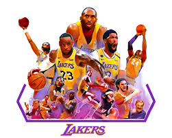
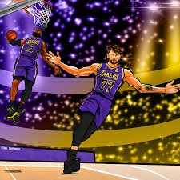
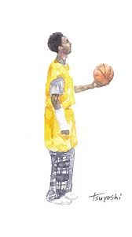
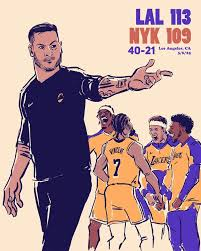
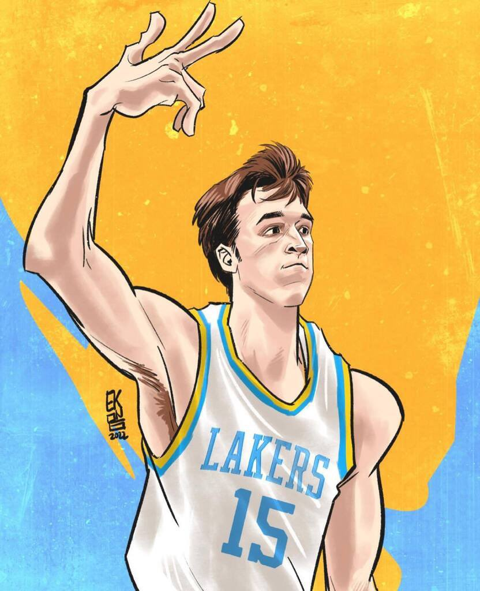
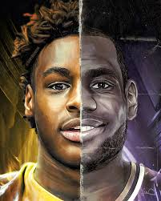

This is the best Laker Fan Art of the Year!

This piece of fan art was created by @David Corzine, a freelance
concept artist. He titles the image "I made it while watching the game as an ode to Kobe". The image
shows many Laker legends with the late Kobe Bryant centered in the middle.

This image was created by @kia_cartoons on instagram. The image depicts
an alley-oop pass a from Luka Doncic to LeBron James. Fun fact: this picture was created the exact same
day Luka was traded./

The image to the left was designed by @tsuyoshi_yamanaka_ on instagram. Not only
is this one of the best fan art pictures I've seen, the image yamanaka recreated is extremely iconic in
the basketball world. The image shows Kobe Bryant with a broken wrist, shooting a free throw. Months after
the real photo was taken, Kobe would go on to win his first NBA championship.

This picture to the right was created by @pure_hoops on instagram. The
image shows Los Angeles Lakers coach, JJ Reddick, along with four Laker players: Jarred Vanderbilt, Austin
Reaves, Gabe Vincent, and Bronny James Jr. The creator of this picture designed images for each laker game
of last season, this one being a 113-109 win against the New York Knicks.

The picture depicted on the left is from @Klutch_23 on X. The image shows
the player Austin Reaves holding up the hand signal of a three-pointer.

The final image on the right was created by @skythlee on DeviantArt.
The picture shows LeBron James with his son Bronny James in a split-face portrait. From the image, the
resemblance can be seen between a father and his son.